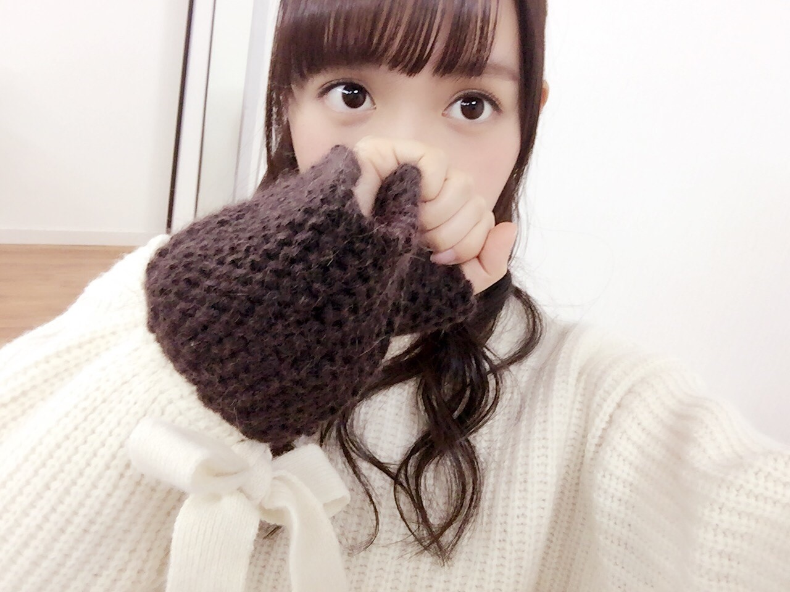
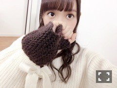

| 2016/12 16 Fri | 中元日芽香 ひめたん-0o0-その689 |
「明治白のひととき珈琲」
「明治The Milk Tea」
現在放送中の新CMに
白石、西野、衛藤、松村、中元で
出演してますo(^o^)o

「おつかれさま！」
撮影も会見も楽しんで参加しました！
元々白のひととき好きで飲んでいたから
今回プロジェクトに携われて幸せです！
WEBムービーも順次公開されますので
楽しみにしててください( ˇωˇ )
テーマは「いっしょに飲も。」です！
素敵なグッズが当たる
キャンペーンもあるみたいなので
是非参加してみて下さい～♪
12日発売の週刊ヤングマガジンさんに
飛鳥・堀・北野・中元で登場～

一期生コンビが淡いピンク、
二期生コンビはパキッとしたピンクの衣装。
もう一着の方も可愛かった！
グラビアなんだけど
今回のテーマはファッション雑誌風てことで
中元には新鮮な空間でした。
ありがとうございました( ˇωˇ )
グラビア好き～
日曜の夜は、らじらー！サンデー
次回は星野みなみちゃんが来てくれます！
オリラジさんは東京から、
乃木坂ちゃんは名古屋からお送りします～
募集中のメールテーマは
◯RAPで教えてNOGIZAKA CHAN
◯乃木坂目覚ましボイス 冬編
◯らじらー！2016乃木坂的流行語大賞
◯らじらー！ラブストーリー
真夜中の電話......もうすぐクリスマス編
◯毒舌対決
宛先はこちら
みなみちゃん回いつも楽しい(^o^)
甘さ成分多め(^o^)
流行語大賞、去年も楽しかったな～
一年の締めって感じがしますね。
2016年最後の乃木坂回！よろしくね！
～お知らせ～
雑誌
12/31 日経エンタテイメント！
アイドルSpecial 2017
1/7 BOMB2月号
WEB
12/14～ ソニトピ！
TV
12/23 乃木坂46 Merry Xmas Show 2016
12/23 Mステスーパーライブ2016
12/31 第67回NHK紅白歌合戦
ライブ
2/20 5th YEAR BIRHTDAY LIVE
2/21 5th YEAR BIRHTDAY LIVE
2/22 5th YEAR BIRHTDAY LIVE
「TVstationお正月号」
「月刊ザテレビジョン年末年始号」
秋元、高山、中元の三人で載ってます！
発売中の
「月刊Newtype1月号」にて
三森すずこさんの武道館ライブに
松村と2人でお邪魔しました♡♡
潜入！レポーター！というよりも
完全にファンでした！幸せな空間！！
なんて素敵なお仕事なんだ！！！
そして乃木坂のクリスマスライブに
三森さんが来てくださって♡♡
なんということでしょう！！
ありがとうございました＼(^o^)／
さゆお誕生日おめでとう＼(^o^)／
いつかパーチーしよう＼(^o^)／
明日の全握、井上×中元ペア！
よろしくお願いします！
個握もよろしくお願いします♡
(＊´・ω・＊)